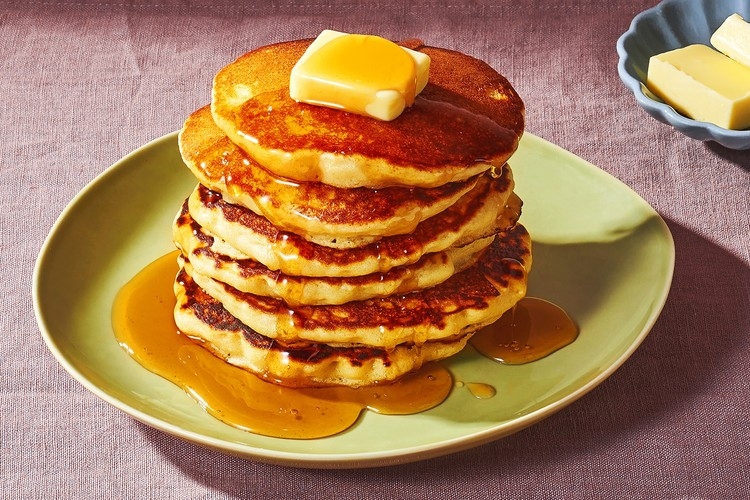

Pancakes

Description
Simple and basic pancake recipe that is ready to eat in less than 30 minutes.
Ingredients
- 1 cup all-purpose flour
- 2 tablespoons sugar
- 2 teaspoons baking powder
- 2 tablespoons unsaalted melted butter
- 1 egg
- 1 tablepoon vegetable oil
Steps
- In a small bowl, whisk together flour, sugar, and baking powder; set aside.
- In a medium bowl, whisk together milk, butter, and egg. Add dry ingredients to milk mixture; whisk until just moistened.
- Heat a large skillet (nonstick or cast-iron) over medium. Fold a sheet of paper towel in half, and moisten with oil; carefully rub skillet with oiled paper towel.
- Spoon 2 to 3 tablespoons of batter onto skillet, using the back of the spoon to spread batter into a round.
- Cook until surface of pancakes have some bubbles and a few have burst, 1 to 2 minutes. Flip carefully with a thin spatula, and cook until browned on the underside, 1 to 2 minutes more.
- Transfer to a baking sheet or platter and continue with more oil and remaining batter.